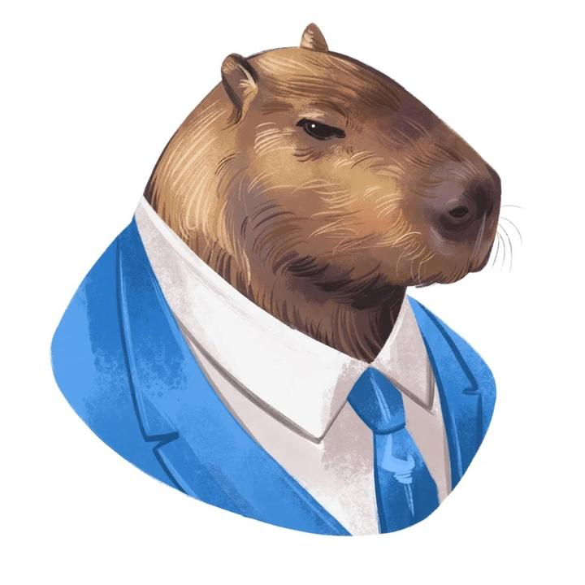

O animal mais querido por todos: A Capivara!

A Capivara é um dos poucos animais que vive em harmonia com todos os outros animais e esse post tem por objetivo trazer mais conhecimento sobre esse animal!
Primeiro, vamos começar definindo o que é uma Capivara.
O que é uma Capivara??
A capivara ou capincho (nome científico: Hydrochoerus hydrochaeris) é uma espécie de mamífero roedor da família Caviidae e subfamília Hydrochoerinae. Alguns autores consideram que deva ser classificada em uma família própria. Está incluída no mesmo grupo de roedores ao qual se classificam as pacas, cutias, os preás e o porquinho-da-índia. Ocorre por toda a América do Sul ao leste dos Andes em habitats associados a rios, lagos e pântanos, do nível do mar até 1 300 m de altitude. Extremamente adaptável, pode ocorrer em ambientes altamente alterados pelo ser humano.
Algumas curiosidades sobre a Capivara:
- É o maior roedor do mundo.
- As fêmeas geralmente produzem 4 filhotes por gestação.
- Vive em média 12 anos em cativeiro
- O Coletivo de Capivaras é Capivarias
Essas informações foram retiradas da Wikipedia.
Por quê gostamos das Capivaras?
Existem inúmeas razões para gostar das capivaras, mas aqui estão algumas delas:
- São de boa com qualquer animal
- Constittuem familias lindas com suas capivarinhas filhotes!
- Passam o dia todo comendo e descansando à beira de rios
- Até jacarés convivem de boa com capivaras! 🐊
- São nadadoras excelentes! 🌊
{kind=link}
Agora com esse novo conhecimento, vá em frente e conte para seus amigos sobre nós!